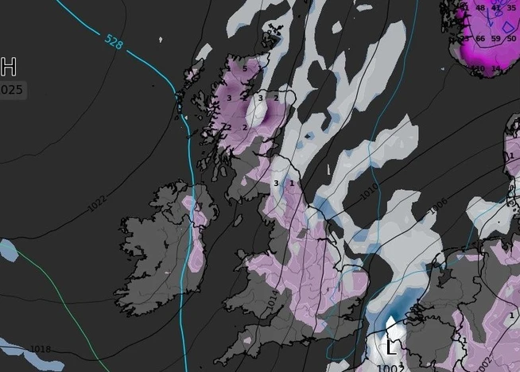

An Arctic blast could return to Britain in just a few days time as snow sweeps down from the Nordic region of Europe, weather maps have shown. Weather forecasting website WXCHARTS have shown snow will likely hit the UK on January 14 and stay in place for much of the week. .
An Arctic blast could return to Britain in just a few days time as snow sweeps down from the Nordic region of Europe, weather maps have shown. Weather forecasting website WXCHARTS have shown snow will likely hit the UK on January 14 and stay in place for much of the week. How to find your happiness: The Japanese philosophy of Ikigai Low levels of snow are only expected in Scotland on January 14. However, it could stretch down to the Midlands on January 15, before bashing much of England and Scotland the following day.
An Arctic blast could return to Britain in just a few days time as snow sweeps down from the Nordic region of Europe, weather maps have shown. Weather forecasting website WXCHARTS have shown snow will likely hit the UK on January 14 and stay in place for much of the week. How to find your happiness: The Japanese philosophy of Ikigai Low levels of snow are only expected in Scotland on January 14. However, it could stretch down to the Midlands on January 15, before bashing much of England and Scotland the following day. WXCHARTS is forecasting the return of snow WXCHARTS is forecasting the return of snowWXCHARTS Despite the return of snowfall, conditions are not expected to result in much depth. Mercury is poised to plummet to as low as -6C in parts of Scotland. Wales could see temperatures drop to as low as -2C and England will see mercury dip below freezing. The North West of England is expected to record the coldest temperature, with WXCHARTS suggesting it could fall to as low as -3C. The change in temperatures would come after relatively mild temperatures as Britain gets battered by Storm Henk. Storm Henk has wreaked havoc across much of the UK, with 268 flood warnings and 288 flood alerts issued acorss England.
An Arctic blast could return to Britain in just a few days time as snow sweeps down from the Nordic region of Europe, weather maps have shown.
Weather forecasting website WXCHARTS have shown snow will likely hit the UK on January 14 and stay in place for much of the week.
How to find your happiness: The Japanese philosophy of Ikigai
Low levels of snow are only expected in Scotland on January 14.
However, it could stretch down to the Midlands on January 15,
before bashing much of England and Scotland the following day.
WXCHARTS is forecasting the return of snow
WXCHARTS is forecasting the return of snowWXCHARTS
Despite the return of snowfall, conditions are not expected to result in much depth.
Mercury is poised to plummet to as low as -6C in parts of Scotland.
Wales could see temperatures drop to as low
as -2C and England will see mercury dip below freezing.
The North West of England is expected to record the coldest temperature, with WXCHARTS suggesting it could fall to as low as -3C.
The change in temperatures would come after relatively mild temperatures as Britain gets battered by Storm Henk.
Storm Henk has wreaked havoc across much of the UK, with 268 flood warnings and 288 flood alerts issued acorss England.